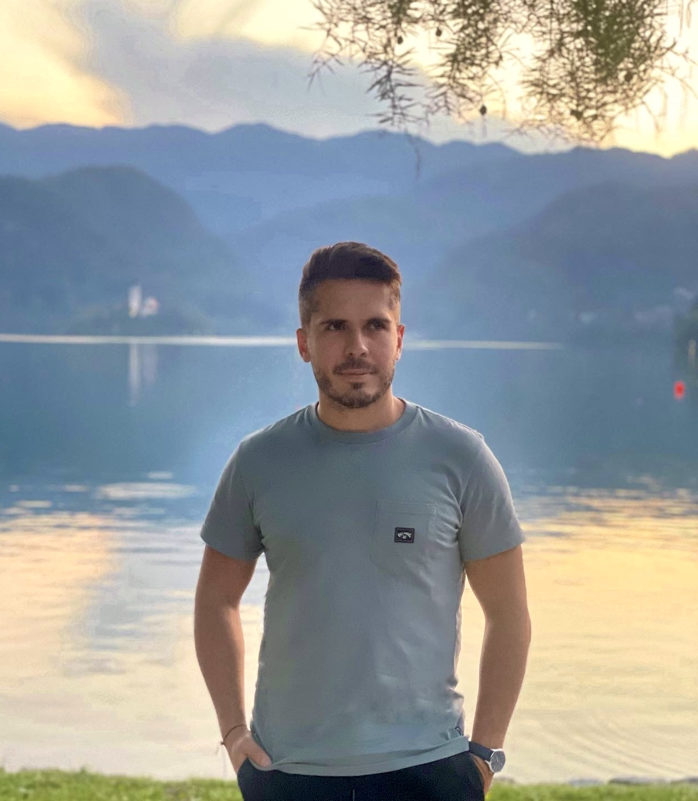

A selection of my wedding films
The filming is only part of it. The pacing, music and original sound bring each film together. These examples give you a feel for how I work.
Anett & Márk
Eszter & Krisztián
Timi & Gergő
BEHIND THE CAMERA
You live it. I capture it.
I’m Áron Padányi, a wedding filmmaker.

Over the years, I’ve learned that the most striking moments at a wedding aren’t always the most valuable. A brief reaction, a spontaneous laugh or an unexpected hug can say more than a perfectly posed shot.
I like to arrive prepared and know where I need to be throughout the day. I’ll give you guidance during the creative session, but for the rest of the day I’d rather observe than direct.
When you watch the finished film, I want you to feel: yes, that’s exactly what our day was like.
Wedding film packages
Mini
Shorter celebrationsPackage price99 000 Ft
- Ceremony coverage
- 3 hours of coverage
- 3–4 minute highlight film
- 40+ minute extended film
For couples who want a film of the ceremony and the moments around it.
Choose this packageFull
Full-day coveragePackage price249 000 Ft
- Full wedding day coverage
- 13 hours of coverage
- Drone footage
- 5–7 minute highlight film
- 90+ minute extended film
From getting ready to the evening celebrations. A highlight film to share and an extended film with the key events.
Choose this packagePremium
Separate creative sessionPackage price399 000 Ft
- Full wedding day coverage
- 13 hours of coverage
- Creative filming on a separate day
- Drone footage
- 7–8 minute highlight film
- 150+ minute extended film
Alongside the wedding day, we film a separate creative session with more time for the two of you.
Choose this packageTravel is not included in the package price. The travel fee is 120 HUF/km, calculated as a round trip from Erd.
When is your wedding?
Check whether your date is still available and request a quote. Booked dates are marked in the calendar.
Where do I film weddings?
I’m based in Érd and usually film within a two-hour drive. If your venue is further away, let me know and we can discuss it.
Send me
your plans.
Tell me when and where your wedding will take place, and leave your contact details.
I’ll check availability and get back to you personally.
Reviews
Excerpts from couples’ Facebook reviews, translated from Hungarian.
“We wholeheartedly recommend Áron. He was professional throughout, and both the short and long films turned out beautifully.”
“He made a fantastic film for us that is always a joy to watch again!”
“I wholeheartedly recommend Áron. Working together was really easy, and he made wonderful films!”
“He did a professional job, and we received wonderful films at a very fair price!”
“Áron made our wedding films. He delivered wonderful work; choosing to work with him was the best decision.”
“The short film captured the atmosphere of the day beautifully, and having it ready early was an extra joy.”
“We wholeheartedly recommend Áron! He was so helpful and always there whenever we had a question!”
“Although we usually dislike being on camera, with him the whole experience felt truly fun and relaxed.”
“Áron captured every moment beautifully; both the long film and the short version were perfect.”
“The drone footage turned out beautifully too.”
“The films captured the atmosphere of our wedding perfectly, and everyone has been praising them ever since!”
“Áron discreetly followed our entire day, capturing the important events and even the smallest details from multiple angles.”
“We have watched the shorter version every day since receiving it. A beautifully made, lasting memory of our wedding day.”
“Working discreetly while capturing every important moment, he made a film we will treasure forever.”
“He beautifully captured every important and intimate moment of our wedding. Professional and attentive.”
“Throughout the day, he was kind, helpful and accommodating with us and the other suppliers. He captured every important detail.”
“The long film perfectly captures the atmosphere of the day; it feels as though we are reliving every moment.”
“Áron made my dream come true and created the perfect wedding film for us.”
“The film turned out beautifully, both films were ready on time, and I can only recommend him!”
“The film was perfect in both quality and content. We met a reliable, very kind and lovely person.”
“Beautiful, high-quality films were made of our big day. We recommend him to everyone!”
“The way the film was matched to the music was masterful, and it was done in a short time.”
“He also worked well with our photographer on the wedding day. Thank you for your work!”
Information
Once you have a date and venue, get in touch. I’ll check my calendar and let you know whether I’m available.